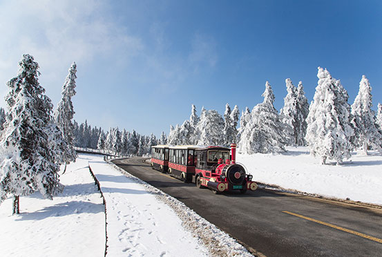
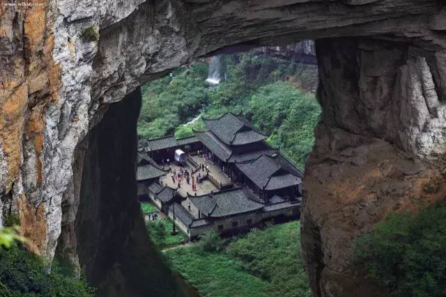
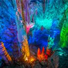

武隆区
属重庆市辖区，位于重庆市东南部，
东经107°14'~108°05'，北纬29°02'~29°40'，
地处重庆市东南部乌江下游，武陵山和
大娄山峡谷地带。境内有 "世界自然遗
产"喀斯特芙蓉洞和"国家5A级旅游景
区"天生三桥。
截至2020年4月，武隆区幅员面积
2901.3平方公里，辖4个街道、10个镇、
12个乡。有汉族、苗族、土家族、仡
佬族等13个民族 。根据第七次人口普
查数据，截至2020年11月1日零时，武
隆区常住人口35.67万人。
2016年，武隆被联合国授予"中国可
持续发展城市范例奖" 。
|
|  |
仙女山国家森林公园是国家AAAAA级景区，位于重庆市武隆区，总面积8910公顷，平均海拔1900米，最高峰2033米，以其江南独具魅力的高山草原、南国罕见的林海雪原、青幽秀美的丛林碧野景观而誉为“东方瑞士”。 |
|  |
- 天生三桥武隆天坑又名天生三桥，是全国罕见的地质奇观生态型旅游区，属典型的喀斯特地貌。景区以天龙桥、青龙桥、黑龙桥三座气势磅礴的石拱桥称奇于世，属亚洲最大的天生桥群。
|
|  |
芙蓉洞武隆芙蓉洞是一个大型石灰岩洞穴，形成于第四纪更新世(大约120多万年前)，发育在古老的寒武系白云质灰岩中。洞内深部稳定气温为16.1度。芙蓉洞主洞长 2700 米，游览道1860米，底宽12—15米以上，最宽69.5米;洞高一般8—25米，最高48.3米;洞底总面积37000平方米，其中辉煌大厅面积在1000平方米以上。其中 “ 辉煌大厅 ” 面积 1.1 万平方米，最为壮观。整个芙蓉洞的最大静态和客容量为185000人。 |
|